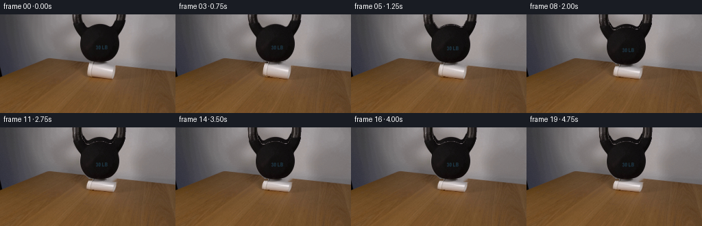
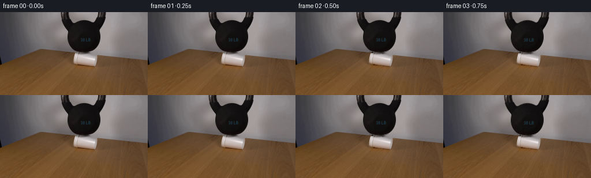

CODING AGENTS AS PIXEL WORLD MODELS
traex/DeepSeek-V4.1-Flash · 0192
点击播放 · 原生 RGB 像素
逐轮保存的候选
回放视频、检查图与代码变化。
每份候选均可单独播放。实际图片检查记录在下方工具轨迹中。
候选 01播放与检查图
点击播放 · 原生 RGB 像素


展开代码变化
--- 上一保存版本
+++ 本次保存版本
@@ -0,0 +1,254 @@
+from pathlib import Path
+
+import cv2
+import numpy as np
+from PIL import Image
+
+import artifact_io
+
+
+ROOT = Path(__file__).resolve().parent
+WIDTH, HEIGHT, FRAMES = 256, 144, 20
+
+
+def smoothstep(value):
+ value = float(np.clip(value, 0.0, 1.0))
+ return value * value * (3.0 - 2.0 * value)
+
+
+def make_weight_mask(image):
+ """Extract the cropped kettlebell silhouette from its dark, neutral pixels."""
+ gray = cv2.cvtColor(image, cv2.COLOR_RGB2GRAY)
+ saturation = image.max(axis=2).astype(np.int16) - image.min(axis=2)
+ yy, xx = np.mgrid[:HEIGHT, :WIDTH]
+
+ candidate = (
+ (gray < 92)
+ & (saturation < 48)
+ & (yy < 74)
+ & (xx >= 96)
+ & (xx <= 194)
+ ).astype(np.uint8)
+ candidate = cv2.morphologyEx(
+ candidate, cv2.MORPH_CLOSE, np.ones((3, 3), np.uint8)
+ )
+
+ count, labels, stats, _ = cv2.connectedComponentsWithStats(candidate, 8)
+ seed_label = labels[38, 145]
+ if seed_label == 0:
+ raise RuntimeError("Could not identify the kettlebell")
+ mask = labels == seed_label
+
+ # The kettlebell body is solid below the handle opening. Filling its
+ # per-row span restores dark highlights that fall above the threshold.
+ for y in range(18, 72):
+ xs = np.flatnonzero(mask[y])
+ if xs.size:
+ left = max(96, int(xs.min()) - 1)
+ right = min(194, int(xs.max()) + 1)
+ mask[y, left : right + 1] = True
+
+ mask = cv2.morphologyEx(
+ mask.astype(np.uint8), cv2.MORPH_CLOSE, np.ones((3, 3), np.uint8)
+ )
+ return mask.astype(bool)
+
+
+def make_cup_mask():
+ """Trace the visible foam-cup silhouette, including its compressed rim."""
+ mask = np.zeros((HEIGHT, WIDTH), np.uint8)
+ outline = np.array(
+ [
+ (130, 71),
+ (169, 74),
+ (169, 88),
+ (166, 94),
+ (158, 94),
+ (139, 90),
+ (127, 87),
+ (127, 78),
+ ],
+ np.int32,
+ )
+ cv2.fillPoly(mask, [outline], 255)
+ return mask > 0
+
+
+def build_background(image, occluders):
+ """Reconstruct the plain wall and wood behind the removable foreground."""
+ background = image.astype(np.float32).copy()
+ gray = cv2.cvtColor(image, cv2.COLOR_RGB2GRAY)
+ saturation = image.max(axis=2).astype(np.int16) - image.min(axis=2)
+ weight_like = (gray < 108) & (saturation < 70)
+
+ # Above the table edge the wall is nearly planar. A row-wise interpolation
+ # keeps its vertical falloff while avoiding large-area inpainting smears.
+ for y in range(0, 68):
+ row_mask = occluders[y] | weight_like[y]
+ xs = np.flatnonzero(row_mask)
+ if xs.size == 0:
+ continue
+ left = int(xs.min())
+ right = int(xs.max())
+ if left <= 0 or right >= WIDTH - 1:
+ continue
+ lcol = background[y, left - 1]
+ rcol = background[y, right + 1]
+ span = right - left + 1
+ weights = np.linspace(0.0, 1.0, span, dtype=np.float32)[:, None]
+ background[y, left : right + 1] = lcol * (1.0 - weights) + rcol * weights
+
+ # The table boundary and cup contact area are small enough for local
+ # inpainting once the wall has been restored.
+ lower = np.zeros((HEIGHT, WIDTH), np.uint8)
+ lower[67:, :] = occluders[67:, :].astype(np.uint8) * 255
+ lower = cv2.dilate(lower, np.ones((3, 3), np.uint8))
+ repaired = cv2.inpaint(
+ np.clip(background, 0, 255).astype(np.uint8),
+ lower,
+ 5,
+ cv2.INPAINT_TELEA,
+ ).astype(np.float32)
+ blend = cv2.GaussianBlur(lower.astype(np.float32) / 255.0, (5, 5), 0)[
+ ..., None
+ ]
+ background = repaired * blend + background * (1.0 - blend)
+ return np.clip(background, 0, 255)
+
+
+def warp_cup(image, cup_mask, drop):
+ top = 72.0 + drop
+ bottom = 93.5
+ sy = (bottom - top) / (bottom - 72.0)
+ sx = 1.0 + 0.065 * drop / 6.2
+ center_x = 148.0
+ matrix = np.array(
+ [
+ [sx, 0.0, center_x * (1.0 - sx)],
+ [0.0, sy, bottom * (1.0 - sy)],
+ ],
+ np.float32,
+ )
+ cup = cv2.warpAffine(
+ image,
+ matrix,
+ (WIDTH, HEIGHT),
+ flags=cv2.INTER_CUBIC,
+ borderMode=cv2.BORDER_REFLECT_101,
+ ).astype(np.float32)
+ alpha = cv2.warpAffine(
+ cup_mask.astype(np.uint8) * 255,
+ matrix,
+ (WIDTH, HEIGHT),
+ flags=cv2.INTER_LINEAR,
+ borderMode=cv2.BORDER_CONSTANT,
+ borderValue=0,
+ ).astype(np.float32)
+ return cup, alpha / 255.0, top, bottom
+
+
+def shade_cup(cup, alpha, top, bottom, drop):
+ """Add shallow foam ridges that deepen as the cup loses height."""
+ yy, xx = np.mgrid[:HEIGHT, :WIDTH]
+ strength = smoothstep(drop / 6.2)
+ v = np.clip((yy - top) / max(bottom - top, 1.0), 0.0, 1.0)
+ horizontal = (xx - 148.0) / 21.0
+
+ ripple = (
+ np.sin(2.0 * np.pi * (3.15 * v + 0.018 * xx))
+ * (0.25 + 0.75 * np.exp(-((horizontal - 0.20) / 0.62) ** 2))
+ * np.sin(np.pi * v)
+ )
+ crease_a = np.exp(-((v - 0.31 - 0.02 * np.sin(xx * 0.22)) / 0.055) ** 2)
+ crease_b = np.exp(-((v - 0.63 + 0.015 * np.sin(xx * 0.31)) / 0.045) ** 2)
+ modulation = (
+ 2.7 * strength * ripple
+ - 4.6 * strength * crease_a
+ - 3.0 * strength * crease_b
+ )
+ shaded = cup + modulation[..., None] * alpha[..., None]
+ return np.clip(shaded, 0, 255)
+
+
+def shift_weight(image, mask, drop):
+ matrix = np.array([[1.0, 0.0, 0.0], [0.0, 1.0, drop]], np.float32)
+ color = cv2.warpAffine(
+ image,
+ matrix,
+ (WIDTH, HEIGHT),
+ flags=cv2.INTER_CUBIC,
+ borderMode=cv2.BORDER_REPLICATE,
+ ).astype(np.float32)
+ alpha = cv2.warpAffine(
+ mask.astype(np.uint8) * 255,
+ matrix,
+ (WIDTH, HEIGHT),
+ flags=cv2.INTER_LINEAR,
+ borderMode=cv2.BORDER_REPLICATE,
+ ).astype(np.float32)
+ return color, alpha / 255.0
+
+
+def composite_over(base, color, alpha):
+ alpha = np.clip(alpha[..., None], 0.0, 1.0)
+ return color * alpha + base * (1.0 - alpha)
+
+
+def add_contact_shading(frame, drop):
+ """Darken only the narrow strip where the deforming cup meets the table."""
+ yy, xx = np.mgrid[:HEIGHT, :WIDTH]
+ amount = 0.020 + 0.012 * smoothstep(drop / 6.2)
+ shadow = np.exp(
+ -((xx - 157.0) / 21.0) ** 4 - ((yy - 94.5) / 3.8) ** 4
+ )
+ return frame * (1.0 - amount * shadow[..., None])
+
+
+def drop_curve(index):
+ if index <= 2:
+ return 0.0
+ if index >= 13:
+ settle = {13: 6.17, 14: 6.13, 15: 6.19, 16: 6.20, 17: 6.20, 18: 6.20, 19: 6.20}
+ return settle[index]
+ t = (index - 2) / 10.0
+ return 6.2 * smoothstep(t)
+
+
+def main():
+ first = np.asarray(Image.open(ROOT / "first_frame.png").convert("RGB"))
+ if first.shape != (HEIGHT, WIDTH, 3):
+ raise ValueError(first.shape)
+
+ weight_mask = make_weight_mask(first)
+ cup_mask = make_cup_mask()
+ background = build_background(first, weight_mask | cup_mask)
+
+ frames = np.empty((FRAMES, HEIGHT, WIDTH, 3), np.uint8)
+ frames[0] = first
+ frames[1] = first
+
+ for index in range(2, FRAMES):
+ drop = drop_curve(index)
+ frame = background.copy()
+
+ cup, cup_alpha, cup_top, cup_bottom = warp_cup(first, cup_mask, drop)
+ cup = shade_cup(cup, cup_alpha, cup_top, cup_bottom, drop)
+ frame = composite_over(frame, cup, cup_alpha)
+
+ weight, weight_alpha = shift_weight(first, weight_mask, drop)
+ frame = composite_over(frame, weight, weight_alpha)
+ frame = add_contact_shading(frame, drop)
+
+ # A fixed, very fine grain prevents the reconstructed regions from
+ # looking perfectly synthetic without introducing temporal flicker.
+ noise = np.random.default_rng(192).normal(0.0, 0.55, (HEIGHT, WIDTH, 1))
+ frame = frame + noise
+ frames[index] = np.clip(np.rint(frame), 0, 255).astype(np.uint8)
+
+ frames[0] = first
+ frames[1] = first
+ artifact_io.save(frames, ROOT)
+
+
+if __name__ == "__main__":
+ main()
可观测工具轨迹
实际执行的命令与返回图片。
命令 1exit 0
/bin/bash -c "pwd && rg --files -g '"'!*.git*'"' | sed -n '1,160p'"
命令 2exit 0
/bin/bash -c 'cat prompt.txt'
命令 3exit 0
/bin/bash -c 'cat GENERATION_RULES.md'
命令 4exit 0
/bin/bash -c 'file first_frame.png && identify first_frame.png 2>/dev/null || true && ls -lah'
命令 5exit 0
/bin/bash -c "sed -n '1,240p' player_template.html"
命令 6exit 0
/bin/bash -c "sed -n '1,240p' artifact_io.py"
命令 7exit 0
/bin/bash -c "python - <<'PY'
from PIL import Image
import numpy as np
im=Image.open('first_frame.png').convert('RGB')
a=np.asarray(im)
print('size', im.size, 'dtype', a.dtype, 'shape', a.shape)
print('corners', a[0,0], a[0,-1], a[-1,0], a[-1,-1])
print('mean/std', a.mean((0,1)), a.std((0,1)))
# coarse 16x9 tiles: mean RGB and within-tile variance
for gy in range(9):
row=[]
for gx in range(16):
t=a[gy*16:(gy+1)*16, gx*16:(gx+1)*16]
m=t.mean((0,1)); s=t.std()
row.append('%02x%02x%02x/%02d'%(int(m[0]),int(m[1]),int(m[2]),int(s)))
print(' '.join(row))
PY"命令 8exit 0
/bin/bash -c "python - <<'PY' import importlib.util for m in ['numpy','PIL','cv2','scipy','sklearn','matplotlib']: print(m, bool(importlib.util.find_spec(m))) PY"
命令 9exit 0
/bin/bash -c "python - <<'PY'
from PIL import Image
import numpy as np
a=np.asarray(Image.open('first_frame.png').convert('RGB'))
# print row means every 4 px and column means every 8 px
for y in range(0,144,4):
r=a[y:y+4].mean((0,1)); print(f'{y:03d} {r[0]:6.1f} {r[1]:6.1f} {r[2]:6.1f}')
PY"命令 10exit 0
/bin/bash -c "python - <<'PY'
from PIL import Image
import numpy as np
a=np.asarray(Image.open('first_frame.png').convert('RGB'))
for x in range(0,256,8):
r=a[:,x:x+8].mean((0,1)); print(f'{x:03d} {r[0]:6.1f} {r[1]:6.1f} {r[2]:6.1f}')
PY"命令 11exit 0
/bin/bash -c "python - <<'PY'
from PIL import Image
import numpy as np
a=np.asarray(Image.open('first_frame.png').convert('RGB')).astype(float)
g=a.mean(2)
# downsample 2x2, map to chars
chars=' .:-=+*#%@'
for y in range(0,144,2):
line=''
for x in range(0,256,2):
v=g[y:y+2,x:x+2].mean()
line+=chars[min(9,int(v/256*10))]
print(line)
PY"命令 12exit 0
/bin/bash -c "python - <<'PY'
from PIL import Image
import numpy as np
from sklearn.cluster import MiniBatchKMeans
a=np.asarray(Image.open('first_frame.png').convert('RGB')).astype(np.float32)
h,w,_=a.shape
X=a.reshape(-1,3)
km=MiniBatchKMeans(12,random_state=1,n_init=5,batch_size=4096).fit(X)
lab=km.labels_.reshape(h,w)
for i,c in enumerate(km.cluster_centers_):
ys,xs=np.where(lab==i)
print(i, len(xs), 'rgb', np.round(c,1), 'bbox', (xs.min(),ys.min(),xs.max(),ys.max()), 'med', (int(np.median(xs)),int(np.median(ys))))
# 4x4 block dominant cluster, chars by ranking brightness/sat
order=np.argsort(km.cluster_centers_.mean(1))
chars='0123456789ABCDEF'
mapping={int(v):chars[j] for j,v in enumerate(order)}
for y in range(0,h,4):
print(''.join(mapping[int(np.bincount(lab[y:y+4,x:x+4].ravel()).argmax())] for x in range(0,w,4)))
PY"命令 13exit 0
/bin/bash -c "python - <<'PY'
from PIL import Image
import numpy as np
a=np.asarray(Image.open('first_frame.png').convert('RGB'))
# save enlarged regions for numeric inspection maybe get edge stats
for name,(x0,y0,x1,y1) in {'cup':(115,65,170,105),'weight':(85,0,170,95),'table':(0,80,256,144)}.items():
im=Image.fromarray(a[y0:y1,x0:x1])
im.resize((im.width*8,im.height*8),Image.Resampling.NEAREST).save('.tmp/'+name+'.png')
print(name, (x0,y0,x1,y1), im.size)
# Canny edges key counts
import cv2
g=cv2.cvtColor(a,cv2.COLOR_RGB2GRAY)
e=cv2.Canny(g,40,100)
print('edges',e.sum()//255)
ys,xs=np.where(e>0)
print('bbox',xs.min(),ys.min(),xs.max(),ys.max())
PY"命令 14exit 0
/bin/bash -c "python - <<'PY'
from PIL import Image
import numpy as np
a=np.asarray(Image.open('first_frame.png').convert('RGB')).astype(float)
# color samples and masks key regions; estimate cup shape by brightness in central box
# print 2px-wide intensity/color grid from x=120..175,y=68..105
for y in range(66,106,2):
s=''
for x in range(118,176,2):
p=a[y:y+2,x:x+2].mean((0,1)); lum=p.mean()
s+= ' .:-=+*#%@'[min(9,int(lum/256*10))]
print(f'{y:03d} {s}')
print('pixels')
for y in [68,70,72,74,76,78,80,82,84,86,88,90,92,94,96,98,100,102,104]:
print(y,[(x,tuple(a[y,x].astype(int))) for x in [120,124,128,132,136,140,144,148,152,156,160,164,168,172]])
PY"命令 15exit 0
/bin/bash -c "python - <<'PY'
from PIL import Image
import numpy as np
a=np.asarray(Image.open('first_frame.png').convert('RGB')).astype(int)
for y in [0,8,16,24,32,40,48,56,64,68,72,76,80,84,88,92,96]:
print('\\ny=',y)
# print changes > 12 in horizontal average color (1-pixel)
d=np.abs(np.diff(a[y],axis=0)).sum(1)
inds=np.flatnonzero(d>18)
# grouped runs
if len(inds):
splits=np.r_[0,np.flatnonzero(np.diff(inds)>1)+1,len(inds)]
print('edges',[(int(inds[s]),int(inds[e-1]+1)) for s,e in zip(splits[:-1],splits[1:])][:30])
print('samples',[(x,tuple(a[y,x])) for x in range(80,201,8)])
PY"命令 16exit 0
/bin/bash -c "python - <<'PY'
from PIL import Image
import numpy as np
a=np.asarray(Image.open('first_frame.png').convert('RGB')).astype(float)
# category based per 2x2 avg
for y in range(0,112,2):
s=''
for x in range(80,224,2):
p=a[y:y+2,x:x+2].mean((0,1)); r,g,b=p; m=p.mean(); sat=p.max()-p.min()
if y>55 and r>g+12 and g>b+10: c='W' # wood
elif m<45: c='#' # kettle dark
elif m<80 and sat<25: c='d'
elif m>165 and sat<20: c='C' # white cup
elif m>110 and sat<18: c='.' # bg
elif m>75 and sat<25: c=':'
elif m>110: c='o'
else: c='?'
s+=c
print(f'{y:03d} {s}')
PY"命令 17exit 0
/bin/bash -c "python - <<'PY'
from PIL import Image
import numpy as np
a=np.asarray(Image.open('first_frame.png').convert('RGB')).astype(float)
# cup white mask by brightness > 150 and low saturation in region
Y,X=np.mgrid[:144,:256]
for th in [140,150,160,170,180,190]:
mask=(a.mean(2)>th)&((a.max(2)-a.min(2))<25)&(X>110)&(X<180)&(Y>60)&(Y<105)
ys,xs=np.where(mask)
print(th,len(xs), 'xrange',xs.min(),xs.max(),'yrange',ys.min(),ys.max(), 'cent',xs.mean(),ys.mean())
for y in [70,72,74,76,78,80,82,84,86,88,90]:
xx=xs[ys==y]
if len(xx): print(' ',y,int(xx.min()),int(xx.max()),len(xx))
PY"命令 18exit 0
/bin/bash -c "python - <<'PY'
from PIL import Image
import numpy as np
a=np.asarray(Image.open('first_frame.png').convert('RGB')).astype(float)
# estimate cup mask by contrast from table local background: white > local table by 25
bg=np.median(a[94:105,118:172],axis=(0,1)); print('bg',bg)
reg=a[66:97,118:174]
mask=(reg.mean(2)>125)&(reg.max(2)-reg.min(2)<35)
for y in range(66,97):
row=mask[y-66]
# runs >3
inds=np.flatnonzero(row)
print(y, [(int(118+x)) for x in [0, len(inds) and inds.min(), len(inds) and inds.max()]], row.sum())
PY"命令 19exit 0
/bin/bash -c "python - <<'PY'
from PIL import Image
import numpy as np
a=np.asarray(Image.open('first_frame.png').convert('RGB')).astype(float)
for y in [72,74,76,78,80,82,84,86,88,90,92,94]:
print('\\ny',y)
# print run RGB every x 118..175 with compressed char by exact-ish
for x in range(118,176,2):
p=a[y:y+2,x:x+2].mean((0,1)); r,g,b=p
# category: bg wood, cup bright, kettle, dark
if r>g+18 and g>b+10: c='w'
elif p.mean()>155 and p.max()-p.min()<35: c='C'
elif p.mean()>115 and p.max()-p.min()<35: c='c'
elif p.mean()<35: c='#'
elif p.mean()<80: c='d'
elif p.mean()>90: c='o'
else: c='.'
print(c,end='')
print()
PY"命令 20exit 0
/bin/bash -c "python - <<'PY'
from PIL import Image
import numpy as np
a=np.asarray(Image.open('first_frame.png').convert('RGB')).astype(float)
# find shadow regions on table; residual vs local median / dark
reg=a[88:144]
lum=reg.mean(2)
for th in [60,70,80,90,100,110]:
m=lum<th; ys,xs=np.where(m)
print(th,len(xs), 'x',xs.min() if len(xs) else None,xs.max() if len(xs) else None,'y',ys.min()+88 if len(xs) else None,ys.max()+88 if len(xs) else None)
# analyze vertical texture, table grain
for x in [0,30,60,90,120,150,180,210,240]:
col=a[95:144,x].mean(1)
print(x, np.round(col,0).astype(int).tolist())
PY"命令 21exit 0
/bin/bash -c "python - <<'PY'
import cv2, numpy as np
from PIL import Image
a=np.asarray(Image.open('first_frame.png').convert('RGB'))
g=cv2.cvtColor(a,cv2.COLOR_RGB2GRAY)
for th in [40,50,60,70,80,90,100,110]:
m=((g<th)&(np.max(a,2)-np.min(a,2)<30)).astype(np.uint8)
# only y<75 x90..195
m[:0]=0;m[75:]=0;m[:,:85]=0;m[:,195:]=0
n,lab,stats,cent=cv2.connectedComponentsWithStats(m,8)
comps=sorted([(stats[i,4],tuple(stats[i,:4]),tuple(np.round(cent[i],1))) for i in range(1,n)], reverse=True)
print(th, comps[:3])
PY"命令 22exit 0
/bin/bash -c "python - <<'PY'
from PIL import Image
import numpy as np
a=np.asarray(Image.open('first_frame.png').convert('RGB')).astype(float)
for y in range(0,74,2):
# threshold dark <60; x min/max plus runs
row=a[y].mean(1)<60
inds=np.flatnonzero(row)
if not len(inds): continue
# x within 80:210
inds=inds[(inds>=80)&(inds<=210)]
print(y, int(inds.min()),int(inds.max()), len(inds))
PY"命令 23exit 0
/bin/bash -c "python - <<'PY'
from PIL import Image
import numpy as np
a=np.asarray(Image.open('first_frame.png').convert('RGB')).astype(float)
for y in [0,8,16,20,24,28,32,36,40,44,48,52,56,60,64,66,68,70]:
# detect bright grey background in x100..190
r=a[y,:,0]; g=a[y,:,1]; b=a[y,:,2]; m=a[y].mean(1); sat=a[y].max(1)-a[y].min(1)
mask=(m>80)&(sat<25)
inds=np.flatnonzero(mask)
# in kettle range expected outside, find last left, first right
left=inds[(inds>=90)&(inds<=145)]; right=inds[(inds>=145)&(inds<=200)]
print(y, 'L', int(left.max()) if len(left) else None, 'R',int(right.min()) if len(right) else None)
PY"命令 24exit 0
/bin/bash -c "python - <<'PY'
from PIL import Image
import numpy as np
a=np.asarray(Image.open('first_frame.png').convert('RGB')).astype(float)
for y in [0,8,16,24,32,40,48,56,64,66,68,70]:
print('\\ny',y)
for x in range(95,196,5):
print(f'{x}:{tuple(np.round(a[y,x]).astype(int))}',end=' ')
print()
PY"命令 25exit 0
/bin/bash -c "python - <<'PY'
from PIL import Image
import numpy as np
a=np.asarray(Image.open('first_frame.png').convert('RGB')).astype(float)
# find boundaries background vertical wall to table horizontal: classify saturation at each x/y
for x in [0,20,40,60,80,100,120,140,160,180,200,220,240,255]:
sat=a[:,x].max(1)-a[:,x].min(1)
# first y with sat>20 and mean<130
inds=np.where((sat>20)&(a[:,x].mean(1)<130))[0]
print(x, inds[:10].tolist())
PY"命令 26exit 0
/bin/bash -c "python - <<'PY'
from PIL import Image
import numpy as np
a=np.asarray(Image.open('first_frame.png').convert('RGB'))
for y in [70,71,72,73,74,75,76,80,84,88,90,92,94]:
print('\\ny',y)
for x in range(120,176,2):
p=a[y,x]; print('%02x%02x%02x'%tuple(p),end=' ')
print()
PY"命令 27exit 0
/bin/bash -c "python - <<'PY'
from PIL import Image
import numpy as np
a=np.asarray(Image.open('first_frame.png').convert('RGB')).astype(float)
for y in range(69,96):
r=a[y,120:176]; sat=r.max(1)-r.min(1); lum=r.mean(1)
m=(sat<62)&(lum>88)
inds=np.flatnonzero(m)+120
# runs len>=2
runs=[]
if len(inds):
splits=np.r_[0,np.flatnonzero(np.diff(inds)>1)+1,len(inds)]
runs=[(int(inds[s]),int(inds[e-1])) for s,e in zip(splits[:-1],splits[1:]) if e-s>=2]
print(y,runs)
PY"命令 28exit 0
/bin/bash -c "python - <<'PY'
from PIL import Image
import numpy as np
a=np.asarray(Image.open('first_frame.png').convert('RGB'))
# print crop as ANSI 24-bit half-block? simple colored unicode not useful in logs. get row-color center profile
for x in [128,132,136,140,144,148,152,156,160,164]:
print('\\nx',x)
for y in [72,73,74,75,76,78,80,82,84,86,88,90,92]:
print(y,tuple(a[y,x]),end='; ')
PY"命令 29exit 0
/bin/bash -c "python - <<'PY'
from PIL import Image
im=Image.open('first_frame.png')
print(im.info)
PY"命令 30exit 0
/bin/bash -c "python - <<'PY'
from PIL import Image
import numpy as np
a=np.asarray(Image.open('first_frame.png').convert('RGB')).astype(float)
for y in range(0,72):
# bounds by dark<60 connected horizontal range
row=a[y].mean(1)<70; inds=np.flatnonzero(row); inds=inds[(inds>=95)&(inds<=195)]
if len(inds): print(y,int(inds.min()),int(inds.max()))
PY"命令 31exit 0
/bin/bash -c "python - <<'PY'
from PIL import Image
import numpy as np
a=np.asarray(Image.open('first_frame.png').convert('RGB')).astype(float)
# For each row get x boundary where pixel becomes gray backdrop via distance from local wall color / dark
# print hue/sat at table top x=180..
for y in range(64,100):
p=a[y,185]; print(y,tuple(np.round(p).astype(int)))
PY"命令 32exit 0
/bin/bash -c "python - <<'PY'
from PIL import Image
import numpy as np
a=np.asarray(Image.open('first_frame.png').convert('RGB')).astype(float)
for y in [0,16,32,48,64]:
print('\\ny',y)
for x in range(100,190,2):
p=a[y,x]; m=p.mean(); sat=p.max()-p.min()
if m<70: c='#'
elif sat<20 and m>135: c='B'
elif m<100: c='d'
else: c='o'
print(c,end='')
print()
PY"命令 33exit 0
/bin/bash -c "python - <<'PY'
from PIL import Image
import numpy as np
a=np.asarray(Image.open('first_frame.png').convert('RGB')).astype(float)
# inspect local RGB around cup to understand material: print horizontal row 80 values x125..170
for y in [74,76,78,80,82,84,86,88,90]:
print('\\ny',y)
for x in range(124,172,2): print(f'{x}:{a[y,x,0]:.0f},{a[y,x,1]:.0f},{a[y,x,2]:.0f}',end=' | ')
print()
PY"命令 34exit 0
/bin/bash -c "python - <<'PY'
import cv2,numpy as np
from PIL import Image
src=np.asarray(Image.open('first_frame.png').convert('RGB'))
lum=cv2.cvtColor(src,cv2.COLOR_RGB2GRAY)
region=np.zeros(lum.shape,np.uint8); region[0:74,98:194]=1
raw=((lum<85)&(region>0)).astype(np.uint8)*255
raw=cv2.morphologyEx(raw,cv2.MORPH_CLOSE,np.ones((3,3),np.uint8))
n,lab,stats,cent=cv2.connectedComponentsWithStats(raw,8)
for i in range(1,n):
if stats[i,4]>50: print(i,stats[i].tolist(),cent[i].tolist())
seed=lab[35,145]
mask=(lab==seed).astype(np.uint8)*255
# fill contours
cnts,_=cv2.findContours(mask,cv2.RETR_EXTERNAL,cv2.CHAIN_APPROX_SIMPLE)
filled=np.zeros_like(mask); cv2.drawContours(filled,cnts,-1,255,-1)
print('mask area',mask.sum()//255,'filled',filled.sum()//255)
ys,xs=np.where(filled>0); print(xs.min(),ys.min(),xs.max(),ys.max())
for y in range(0,74,2):
xx=np.where(filled[y]>0)[0]
print(y, (int(xx.min()),int(xx.max()),len(xx)) if len(xx) else None)
PY"命令 35exit 0
/bin/bash -c "python - <<'PY'
import cv2, numpy as np
from PIL import Image
src=np.asarray(Image.open('first_frame.png').convert('RGB'))
lum=cv2.cvtColor(src,cv2.COLOR_RGB2GRAY).astype(float)
sat=src.max(2).astype(float)-src.min(2).astype(float)
Y,X=np.mgrid[:144,:256]
raw=((lum<88)&(sat<38)&(Y<73)&(X>=100)&(X<=190)).astype(np.uint8)*255
raw=cv2.morphologyEx(raw,cv2.MORPH_CLOSE,np.ones((5,5),np.uint8))
n,lab,stats,cent=cv2.connectedComponentsWithStats(raw,8)
seed=lab[40,145]
m=(lab==seed).astype(np.uint8)*255
cnts,_=cv2.findContours(m,cv2.RETR_EXTERNAL,cv2.CHAIN_APPROX_SIMPLE)
filled=np.zeros_like(m); cv2.drawContours(filled,cnts,-1,255,-1)
hole=np.zeros_like(m)
hp=np.array([(118,0),(170,0),(170,3),(168,6),(165,9),(162,12),(159,14),(156,16),(153,18),(150,19),(147,20),(144,20),(141,19),(138,18),(135,16),(132,14),(129,12),(126,10),(123,7),(120,4)],np.int32)
cv2.fillPoly(hole,[hp],255)
alpha=np.where(hole>0,0,filled)
# check row ranges
for y in range(0,73,2):
xx=np.where(alpha[y]>0)[0]
print(y,(xx.min(),xx.max(),len(xx)) if len(xx) else None)
PY"命令 36exit 0
/bin/bash -c "python - <<'PY'
from PIL import Image
import numpy as np
a=np.asarray(Image.open('first_frame.png').convert('RGB')).astype(float)
# display cup mask and alpha overlays to inspect
import cv2
lum=cv2.cvtColor(a.astype(np.uint8),cv2.COLOR_RGB2GRAY).astype(float)
sat=a.max(2)-a.min(2); Y,X=np.mgrid[:144,:256]
raw=((lum<88)&(sat<38)&(Y<73)&(X>=100)&(X<=190)).astype(np.uint8)*255
raw=cv2.morphologyEx(raw,cv2.MORPH_CLOSE,np.ones((5,5),np.uint8))
n,lab,stats,cent=cv2.connectedComponentsWithStats(raw,8); seed=lab[40,145]; m=(lab==seed).astype(np.uint8)*255
cnts,_=cv2.findContours(m,cv2.RETR_EXTERNAL,cv2.CHAIN_APPROX_SIMPLE); filled=np.zeros_like(m);cv2.drawContours(filled,cnts,-1,255,-1)
out=a.copy(); out[filled>0]=[255,0,0]
Image.fromarray(out.astype(np.uint8)).save('.tmp/mask_overlay.png')
# cup top detailed values x 120-175 rows 68-75
for y in range(68,76):
print('row',y)
for x in range(118,177,1): print(f'{a[y,x,0]:.0f}/{a[y,x,1]:.0f}/{a[y,x,2]:.0f}',end=' ')
print()
PY"命令 37exit 0
/bin/bash -c "python - <<'PY'
from PIL import Image
import numpy as np
a=np.asarray(Image.open('first_frame.png').convert('RGB')).astype(float)
# examine x positions 100-125 y60-75 for other object/shadow
for y in range(60,76):
print(y, [(x,tuple(a[y,x].astype(int))) for x in [100,105,110,115,118,120,122,124,126,128]])
PY"命令 38exit 0
/bin/bash -c "python - <<'PY'
from PIL import Image
import numpy as np
a=np.asarray(Image.open('first_frame.png').convert('RGB')).astype(float)
# identify true cup pixels manually with top edge and side based on high gray; print alpha candidate shape and row counts for color criteria
for y in range(68,95):
row=a[y]
sat=row.max(1)-row.min(1); lum=row.mean(1)
# cup pale grey: lum>90 sat<70; right end before wood transition
m=(lum>90)&(sat<70)
inds=np.flatnonzero(m); inds=inds[(inds>=120)&(inds<=175)]
print(y, int(inds.min()) if len(inds) else None,int(inds.max()) if len(inds) else None, len(inds))
PY"命令 39exit 0
/bin/bash -c "python - <<'PY'
from PIL import Image
import numpy as np
a=np.asarray(Image.open('first_frame.png').convert('RGB')).astype(float)
# print cup area as 1-char color category with 1 pixel horizontal, rows 68-95 x120-175
for y in range(68,96):
s=''
for x in range(120,176):
p=a[y,x]; r,g,b=p; sat=p.max()-p.min(); lum=p.mean()
if r>g+12 and g>b+10: c='w'
elif lum>165 and sat<40: c='C'
elif lum>125 and sat<65: c='c'
elif lum>90 and sat<70: c='o'
elif lum<40: c='#'
elif lum<80: c='d'
else: c='.'
s+=c
print(f'{y:03d} {s}')
PY"命令 40exit 0
/bin/bash -c "python - <<'PY'
from PIL import Image
import numpy as np
a=np.asarray(Image.open('first_frame.png').convert('RGB')).astype(float)
for y in range(68,96):
p=a[y]
# cup: compare hue, saturation < 75 and brightness > 95, restrict
sat=p.max(1)-p.min(1); lum=p.mean(1)
m=(lum>95)&(sat<75)
inds=np.flatnonzero(m); inds=inds[(inds>=120)&(inds<=175)]
# split runs, only around cup
if len(inds):
splits=np.r_[0,np.flatnonzero(np.diff(inds)>1)+1,len(inds)]
runs=[(int(inds[s]),int(inds[e-1])) for s,e in zip(splits[:-1],splits[1:]) if e-s>=2]
print(y,runs)
PY"命令 41exit 0
/bin/bash -c "python - <<'PY'
from PIL import Image
import numpy as np
a=np.asarray(Image.open('first_frame.png').convert('RGB')).astype(float)
for y in [72,73,74,75,76]:
print('\\ny',y)
for x in range(125,181):
p=a[y,x]
if x%1==0:
print(f'{x}:{p[0]:.0f},{p[1]:.0f},{p[2]:.0f}',end=' ')
print()
PY"命令 42exit 0
/bin/bash -c "python - <<'PY'
from PIL import Image
import numpy as np
a=np.asarray(Image.open('first_frame.png').convert('RGB')).astype(float)
# examine table texture and background for potential wobble. print local gradient magnitude means
import cv2
g=cv2.cvtColor(a.astype(np.uint8),cv2.COLOR_RGB2GRAY).astype(float)
for name,sl in [('wall',(slice(0,60),slice(0,90))),('table',(slice(95,144),slice(0,256))),('cup',(slice(72,92),slice(128,168))),('weight',(slice(0,65),slice(115,175)))]:
r=g[sl]; print(name,r.mean(),r.std(), np.abs(np.diff(r,axis=1)).mean(),np.abs(np.diff(r,axis=0)).mean())
PY"命令 43exit 0
/bin/bash -c "python - <<'PY'
from PIL import Image
import numpy as np
a=np.asarray(Image.open('first_frame.png').convert('RGB')).astype(float)
# print exact cup region in a more readable color-letter map every x 1 from 125..175 y 71..95
for y in range(71,96):
s=''
for x in range(125,176):
p=a[y,x]; sat=p.max()-p.min(); lum=p.mean()
# classify by brightness and hue; white cup high neutral
if lum>190 and sat<35: c='A'
elif lum>165 and sat<55: c='B'
elif lum>140 and sat<70: c='C'
elif lum>115 and sat<75: c='D'
elif lum>90 and sat<75: c='E'
elif p[0]>p[1]+12 and p[1]>p[2]+10: c='w'
elif lum<45: c='#'
elif lum<80: c='d'
else: c='o'
s+=c
print(f'{y:03d} {s}')
PY"命令 44exit 0
/bin/bash -c "python - <<'PY'
from PIL import Image
import numpy as np
a=np.asarray(Image.open('first_frame.png').convert('RGB')).astype(float)
# check frame border/dark, etc. maybe scene is a kettlebell black mass on cup. Estimate kettle visible area, cup position.
# compute median RGB by zones
for y0,y1,x0,x1 in [(0,10,0,100),(0,10,190,256),(20,60,0,100),(20,60,190,256),(76,90,0,120),(76,90,175,256),(95,144,0,100),(95,144,160,256)]:
print((y0,y1,x0,x1),np.median(a[y0:y1,x0:x1],axis=(0,1)).round(1))
PY"命令 45exit 0
/bin/bash -c 'python generate.py'
命令 46exit 0
/bin/bash -c "python - <<'PY'
from PIL import Image
import numpy as np, json, os
a=np.asarray(Image.open('first_frame.png').convert('RGB'))
fs=[np.asarray(Image.open(f'frames/{i:02d}.png').convert('RGB')) for i in range(20)]
print('frames',len(fs),'shape',fs[0].shape)
print('frame0 exact',np.array_equal(fs[0],a),'frame1 exact',np.array_equal(fs[1],a))
for i in [0,1,2,3,4,6,8,10,12,13,16,19]:
d=np.abs(fs[i].astype(int)-fs[i-1].astype(int)) if i else np.zeros(a.shape)
print(i,'changed vs prev',np.count_nonzero(d),'mae',d.mean(),'changed vs first',np.count_nonzero(fs[i]"'!=a),'"'mean',fs[i].mean())
print('files',sorted(os.listdir('.')))
PY"命令 47exit 0
/bin/bash -c "python - <<'PY'
from PIL import Image
import numpy as np
A=np.asarray(Image.open('first_frame.png').convert('RGB')).astype(int)
for i in [2,3,5,8,12,19]:
B=np.asarray(Image.open(f'frames/{i:02d}.png').convert('RGB')).astype(int)
d=np.abs(B-A).max(2)
# summarize changed regions in blocks 16x16
print('\\nframe',i,'total',np.count_nonzero(d),'bbox',np.where(d>8)[1].min(),np.where(d>8)[0].min(),np.where(d>8)[1].max(),np.where(d>8)[0].max())
for gy in range(9):
row=''
for gx in range(16):
v=np.mean(d[gy*16:(gy+1)*16,gx*16:(gx+1)*16])
row+=f'{min(99,int(v)):02d} '
print(row)
PY"命令 48exit 0
/bin/bash -c "python - <<'PY'
from PIL import Image
import numpy as np
A=np.asarray(Image.open('first_frame.png').convert('RGB')).astype(int)
for i in [2,8,19]:
B=np.asarray(Image.open(f'frames/{i:02d}.png').convert('RGB')).astype(int)
print('\\nframe',i)
for y in range(66,97,2):
s=''
for x in range(115,181,2):
d=np.abs(B[y:y+2,x:x+2]-A[y:y+2,x:x+2]).mean()
s += ' .:-=+*#%@'[min(9,int(d/4))]
print(f'{y:03d} {s}')
PY"命令 49exit 0
/bin/bash -c "python - <<'PY'
from PIL import Image
import numpy as np
# inspect original local and frame19 cup side by side via color samples
for fn in ['first_frame.png','frames/19.png']:
a=np.asarray(Image.open(fn).convert('RGB')).astype(float)
print('\\n',fn)
for y in [72,74,76,78,80,82,84,86,88,90,92]:
print(y,[(x,tuple(np.round(a[y,x]).astype(int))) for x in [128,130,132,136,140,144,148,152,156,160,164,168,170]])
PY"命令 50exit 0
/bin/bash -c "python - <<'PY'
from PIL import Image
import numpy as np
A=np.asarray(Image.open('first_frame.png').convert('RGB')).astype(int)
for i in [2,3,4,5,8,12,13,19]:
B=np.asarray(Image.open(f'frames/{i:02d}.png').convert('RGB')).astype(int)
# diff at selected points where should not change
print(i, 'wall',np.abs(B[20:60,:90]-A[20:60,:90]).mean(), 'table',np.abs(B[100:144,:90]-A[100:144,:90]).mean())
PY"命令 51exit 0
/bin/bash -c "python - <<'PY'
from PIL import Image
import numpy as np
A=np.asarray(Image.open('first_frame.png').convert('RGB')).astype(int)
for i in [2,8,19]:
B=np.asarray(Image.open(f'frames/{i:02d}.png').convert('RGB')).astype(int)
print('frame',i)
for name,(x0,y0,x1,y1) in {'cupL':(125,70,170,95),'kettle':(106,0,184,72),'righttable':(170,76,256,144),'lefttable':(0,90,120,144),'wall':(0,0,100,65),'wallR':(190,0,256,65)}.items():
d=np.abs(B[y0:y1,x0:x1]-A[y0:y1,x0:x1])
print(name,round(d.mean(),2),round(np.percentile(d,95),2),d.max())
PY"命令 52exit 0
/bin/bash -c "python - <<'PY'
from PIL import Image
import numpy as np
A=np.asarray(Image.open('first_frame.png').convert('RGB')).astype(int)
for i in [2,8,19]:
B=np.asarray(Image.open(f'frames/{i:02d}.png').convert('RGB')).astype(int)
d=np.abs(B-A).max(2)
print('\\n',i)
for y in range(0,75,4):
print(f'{y:03d}', ''.join(' .:-=+*#%@'[min(9,int(d[y:y+4,x:x+4].mean()/10))] for x in range(90,205,2)))
PY"命令 53exit 0
/bin/bash -c "python - <<'PY'
from PIL import Image
import numpy as np
A=np.asarray(Image.open('first_frame.png').convert('RGB')).astype(int)
for i in [2,8,19]:
B=np.asarray(Image.open(f'frames/{i:02d}.png').convert('RGB')).astype(int)
print('\\n',i)
# max diff by row and x runs where diff>15
for y in [0,5,10,15,20,25,30,35,40,45,50,55,60,65,68,70,72,74]:
d=np.abs(B[y]-A[y]).max(1)
inds=np.flatnonzero(d>15)
print(y, (int(inds.min()),int(inds.max()),len(inds)) if len(inds) else None, 'max',d.max())
PY"命令 54exit 0
/bin/bash -c "python - <<'PY'
from PIL import Image
import numpy as np
A=np.asarray(Image.open('first_frame.png').convert('RGB')).astype(int)
for i in [8,19]:
B=np.asarray(Image.open(f'frames/{i:02d}.png').convert('RGB')).astype(int)
print('\\nframe',i)
for y in [20,30,40,50,60,68,72,80,88,94]:
print(y)
for x in range(100,190,5):
d=B[y,x]-A[y,x]
print(f'{x}:{tuple(d)}',end=' ')
print()
PY"命令 55exit 0
/bin/bash -c "python - <<'PY'
from PIL import Image
import numpy as np
A=np.asarray(Image.open('first_frame.png').convert('RGB')).astype(int)
for i in [2,8,19]:
B=np.asarray(Image.open(f'frames/{i:02d}.png').convert('RGB')).astype(int)
print('\\nframe',i)
for y in [50,55,60,64,66,68,70,72,74,76,78,80,82,84,86,88,90,92,94]:
print('y',y)
for x in range(115,176,2):
d=B[y,x]-A[y,x]
print(' ' if np.abs(d).max()<5 else ('+' if d.mean()>0 else '-'),end='')
print()
PY"命令 56exit 0
/bin/bash -c "python - <<'PY'
from PIL import Image
import numpy as np
A=np.asarray(Image.open('first_frame.png').convert('RGB')).astype(int)
for i in [8,19]:
B=np.asarray(Image.open(f'frames/{i:02d}.png').convert('RGB')).astype(int)
print('\\n',i)
for y in [50,55,60,64,66,68,70,72,74,76,78,80,82,84,86,88,90,92,94]:
d=np.abs(B[y]-A[y]).max(1)
inds=np.flatnonzero(d>10)
# runs
runs=[]
if len(inds):
splits=np.r_[0,np.flatnonzero(np.diff(inds)>1)+1,len(inds)]
runs=[(int(inds[s]),int(inds[e-1])) for s,e in zip(splits[:-1],splits[1:]) if e-s>=0]
print(y,runs)
PY"命令 57exit 0
/bin/bash -c "python - <<'PY'
from PIL import Image
import numpy as np
A=np.asarray(Image.open('first_frame.png').convert('RGB')).astype(int)
for i in [8,19]:
B=np.asarray(Image.open(f'frames/{i:02d}.png').convert('RGB')).astype(int)
print('\\nframe',i)
for y in [50,55,60,64,66,68,70,72,74,76,78,80,82,84,86,88,90,92,94]:
s=''
for x in range(115,181,2):
d=np.abs(B[y,x]-A[y,x]).max()
s += ' ' if d<8 else ('+' if (B[y,x]-A[y,x]).mean()>0 else '-')
print(f'{y:03d} {s}')
PY"命令 58exit 0
/bin/bash -c "python - <<'PY'
from PIL import Image
import numpy as np
A=np.asarray(Image.open('first_frame.png').convert('RGB')).astype(int)
for i in [8,19]:
B=np.asarray(Image.open(f'frames/{i:02d}.png').convert('RGB')).astype(int)
print('\\nframe',i)
for y in [68,69,70,71,72,73,74,75,76,77,78,79,80,81,82,83,84,85,86,87,88,89,90,91,92,93,94]:
s=''
for x in range(115,181,1):
d=np.abs(B[y,x]-A[y,x]).max()
s += ' ' if d<8 else ('+' if (B[y,x]-A[y,x]).mean()>0 else '-')
print(f'{y:03d} {s}')
PY"命令 59exit 0
/bin/bash -c "python - <<'PY'
from PIL import Image
import numpy as np
A=np.asarray(Image.open('first_frame.png').convert('RGB')).astype(int)
for i in [8,19]:
B=np.asarray(Image.open(f'frames/{i:02d}.png').convert('RGB')).astype(int)
print('\\nframe',i)
for y in [68,70,72,74,76,78,80,82,84,86,88,90,92]:
s=''
for x in range(118,175,1):
d=np.abs(B[y,x]-A[y,x]).max()
if d<8:c='.'
elif (B[y,x]-A[y,x]).mean()>0:c='+'
else:c='-'
s+=c
print(f'{y:03d} {s}')
PY"命令 60exit 0
/bin/bash -c "python - <<'PY'
from PIL import Image
import numpy as np
A=np.asarray(Image.open('first_frame.png').convert('RGB')).astype(int)
B=np.asarray(Image.open('frames/19.png').convert('RGB')).astype(int)
for y in range(68,75):
print('\\ny',y)
for x in range(118,176):
d=B[y,x]-A[y,x]
if abs(d).max()>5: print(x,tuple(d),end=';')
print()
PY"命令 61exit 0
/bin/bash -c 'which chafa || true; which viu || true; which jp2 || true; which img2txt || true; which ffmpeg || true; which convert || true'
命令 62exit 0
/bin/bash -c "python - <<'PY'
from PIL import Image
import numpy as np
im=np.array(Image.open('first_frame.png').convert('RGB'))
# print representative 64x36 image as ANSI truecolor background; each cell 4x4
for y in range(0,144,4):
out=[]
for x in range(0,256,4):
c=im[y:y+4,x:x+4].mean((0,1)).astype(int)
out.append(f'\\x1b[48;2;{c[0]};{c[1]};{c[2]}m ')
print(''.join(out)+'\\x1b[0m')
PY"命令 63exit 0
/bin/bash -c "sed -n '1,280p' generate.py"
命令 64exit 0
/bin/bash -c "ls -lah .tmp frames | sed -n '1,120p'"
命令 65exit 0
/bin/bash -c 'git status --short 2>/dev/null || true'
命令 66exit 0
/bin/bash -c "python - <<'PY'
import numpy as np, cv2
from PIL import Image
from generate import make_weight_mask, make_cup_mask, build_background
A=np.asarray(Image.open('first_frame.png').convert('RGB'))
wm=make_weight_mask(A); cm=make_cup_mask()
bg=build_background(A,wm|cm)
Image.fromarray(bg.astype(np.uint8)).save('.tmp/background.png')
out=A.copy(); out[wm]=[255,0,0]; out[cm]=[0,255,0]; Image.fromarray(out).save('.tmp/layers.png')
print('wm',wm.sum(),'cm',cm.sum())
# save enlarged crops of bg and first
for name,im in [('bg',bg.astype(np.uint8)),('first',A)]:
crop=im[0:110,90:200]
Image.fromarray(crop).resize((660,660),Image.Resampling.NEAREST).save('.tmp/'+name+'_crop.png')
PY"命令 67exit 0
/bin/bash -c "python - <<'PY'
from PIL import Image
import numpy as np
for name in ['background.png','layers.png','first_crop.png','bg_crop.png']:
im=Image.open('.tmp/'+name).convert('RGB'); a=np.asarray(im)
print(name,im.size,a.mean((0,1)).round(1))
PY"命令 68exit 0
/bin/bash -c "python - <<'PY'
from PIL import Image
import numpy as np
A=np.asarray(Image.open('first_frame.png').convert('RGB')).astype(int)
B=np.asarray(Image.open('.tmp/background.png').convert('RGB')).astype(int)
for y in [0,20,40,60,65,66,67,68,70,72,74,76,78,80,84,88,92,96]:
print('\\ny',y)
for x in range(90,201,10):
print(x, tuple(B[y,x]), 'd',tuple(B[y,x]-A[y,x]),end=' | ')
print()
PY"命令 69exit 1
/bin/bash -c "python - <<'PY'
import cv2, numpy as np
from PIL import Image
from generate import make_weight_mask, make_cup_mask
A=np.asarray(Image.open('first_frame.png').convert('RGB')).astype(float)
wm=make_weight_mask(A); cm=make_cup_mask()
oc=wm|cm
# candidate background with only rectangular affected region computed by row interpolation / inpaint
# Print original vs synthetic for central, understand if we can simpler preserve original wall and table all non-occluders.
# Find weight edge boundary in mask row by row
for y in range(0,72,4):
xs=np.where(wm[y])[0]
print(y,(xs.min(),xs.max(),len(xs)) if len(xs) else None)
PY"命令 70exit 0
/bin/bash -c "python - <<'PY'
import cv2, numpy as np
from PIL import Image
from generate import make_weight_mask, make_cup_mask
A=np.asarray(Image.open('first_frame.png').convert('RGB'))
wm=make_weight_mask(A); cm=make_cup_mask()
for y in range(0,72,4):
xs=np.where(wm[y])[0]
print(y,(xs.min(),xs.max(),len(xs)) if len(xs) else None)
PY"命令 71exit 0
/bin/bash -c "python - <<'PY'
from PIL import Image
import numpy as np
A=np.asarray(Image.open('first_frame.png').convert('RGB')).astype(float)
# Compare reconstructed wall with original at some point. use values rows/cols.
B=np.asarray(Image.open('.tmp/background.png').convert('RGB')).astype(float)
for y in [0,10,20,30,40,50,60,64,66]:
print('\\nrow',y)
for x in [100,105,110,115,120,125,130,135,140,145,150,155,160,165,170,175,180,185,190]:
print(f'{x}: A{A[y,x].mean():.0f} B{B[y,x].mean():.0f}',end=' | ')
print()
PY"命令 72exit 0
/bin/bash -c "python - <<'PY'
from PIL import Image
import numpy as np
A=np.asarray(Image.open('first_frame.png').convert('RGB')).astype(int)
B=np.asarray(Image.open('.tmp/background.png').convert('RGB')).astype(int)
# Determine where background differs >10 and bbox
D=np.abs(B-A).max(2)
ys,xs=np.where(D>10)
print('changed',len(xs),'bbox',(xs.min(),ys.min(),xs.max(),ys.max()))
for y in range(0,110,5):
print(y, ''.join('#' if D[y,x]>10 else '.' for x in range(90,205,2)))
PY"命令 73exit 0
/bin/bash -c "python - <<'PY'
from PIL import Image
import numpy as np
A=np.asarray(Image.open('first_frame.png').convert('RGB')).astype(int)
B=np.asarray(Image.open('.tmp/background.png').convert('RGB')).astype(int)
# Find where foreground masks remove original: print bg diff from A where occluded, compare it to table expected
# More useful: generate alpha union binary and print all changed pixels groups.
D=np.abs(B-A).max(2)
# print color values for bg rows 66-95 x125-175
for y in range(66,96,2):
print('\\n',y)
for x in range(125,176,2): print(f'{B[y,x,0]:.0f}/{B[y,x,1]:.0f}/{B[y,x,2]:.0f}',end=' ')
print()
PY"命令 74exit 0
/bin/bash -c "python - <<'PY'
from PIL import Image
import numpy as np
A=np.asarray(Image.open('first_frame.png').convert('RGB')).astype(float)
B=np.asarray(Image.open('.tmp/background.png').convert('RGB')).astype(float)
# Compare masked vs background only in cup bbox
for y in [68,70,72,74,76,78,80,82,84,86,88,90,92,94]:
# list changed ranges bg-vs-A >15
d=np.abs(B[y]-A[y]).max(1); inds=np.flatnonzero(d>15)
runs=[]
if len(inds):
splits=np.r_[0,np.flatnonzero(np.diff(inds)>1)+1,len(inds)]
runs=[(int(inds[s]),int(inds[e-1])) for s,e in zip(splits[:-1],splits[1:])]
print(y,runs)
PY"命令 75exit 0
/bin/bash -c "python - <<'PY'
import numpy as np
from PIL import Image
from generate import make_weight_mask, make_cup_mask
A=np.asarray(Image.open('first_frame.png').convert('RGB'))
wm=make_weight_mask(A); cm=make_cup_mask()
Image.fromarray((wm*255).astype(np.uint8)).resize((512,288),Image.Resampling.NEAREST).save('.tmp/weight_mask.png')
Image.fromarray((cm*255).astype(np.uint8)).resize((512,288),Image.Resampling.NEAREST).save('.tmp/cup_mask.png')
print('weight mask bbox',np.where(wm)[1].min(),np.where(wm)[0].min(),np.where(wm)[1].max(),np.where(wm)[0].max())
print('cup mask bbox',np.where(cm)[1].min(),np.where(cm)[0].min(),np.where(cm)[1].max(),np.where(cm)[0].max())
PY"命令 76exit 0
/bin/bash -c "python - <<'PY'
from PIL import Image
import numpy as np
A=np.asarray(Image.open('first_frame.png').convert('RGB')).astype(int)
B=np.asarray(Image.open('frames/19.png').convert('RGB')).astype(int)
# print generated row 80 etc vs expected manually
for y in [68,70,72,74,76,78,80,82,84,86,88,90,92,94]:
print('\\ny',y)
for x in range(125,176,5): print(x,tuple(A[y,x]),'->',tuple(B[y,x]),end=' | ')
print()
PY"命令 77exit 0
/bin/bash -c "python - <<'PY'
from PIL import Image
import numpy as np
im=Image.open('first_frame.png').convert('RGB')
a=np.asarray(im)
print('shape',a.shape)
# downsample 4x4 color stats and luminance ascii
lum=a.mean(2)
chars=' .:-=+*#%@'
for y in range(0,144,4):
line=''
for x in range(0,256,4):
v=lum[y:y+4,x:x+4].mean()
line+=chars[min(9,int(v/256*10))]
print(f'{y:03d} {line}')
PY"命令 78exit 0
/bin/bash -c "sed -n '1,260p' generate.py"
命令 79exit 0
/bin/bash -c 'cat prompt.txt'
命令 80exit 0
/bin/bash -c 'cat GENERATION_RULES.md'
命令 81exit 0
/bin/bash -c "git status --short && rg --files | sort | sed -n '1,120p'"
命令 82exit 0
/bin/bash -c "sed -n '1,260p' artifact_io.py"
命令 83exit 0
/bin/bash -c "python - <<'PY'
import numpy as np
from PIL import Image
im=np.asarray(Image.open('first_frame.png').convert('RGB'))
print(im.shape, im.dtype, im.min(), im.max(), im.mean(axis=(0,1)))
# row-wise segments by simple colors
for y in range(0,144,4):
row=im[y]
print(y, 'mean', np.rint(row.mean(0)).astype(int), 'min',row.min(0), 'max',row.max(0))
PY"命令 84exit 0
/bin/bash -c "python - <<'PY'
import numpy as np
from PIL import Image
im=np.asarray(Image.open('first_frame.png').convert('RGB'))
for y in [0,10,20,30,40,50,60,66,68,70,71,72,73,74,75,76,78,80,82,84,86,88,90,91,92,93,94,95,96,100,110,120,130,140,143]:
# print runs of dark (<90) and bright (>170)
vals=im[y]
dark=vals.mean(1)<90
bright=vals.mean(1)>170
def runs(mask):
d=np.diff(np.r_[False,mask,False].astype(int)); s=np.where(d==1)[0]; e=np.where(d==-1)[0]-1
return [(int(a),int(b)) for a,b in zip(s,e) if b-a>=1]
print(f'y={y:3d} dark={runs(dark)} bright={runs(bright)}')
PY"命令 85exit 0
/bin/bash -c "python - <<'PY'
import numpy as np
from PIL import Image
im=np.asarray(Image.open('first_frame.png').convert('RGB'))
# classify central region at 2x2 blocks
x0,x1,y0,y1=90,200,55,112
chars=[]
for y in range(y0,y1,2):
line=''
for x in range(x0,x1,2):
p=im[y:y+2,x:x+2].reshape(-1,3).mean(0)
r,g,b=p
mx=max(r,g,b); mn=min(r,g,b); sat=mx-mn; lum=(r+g+b)/3
if lum<35: c='#'
elif lum<70 and sat<30: c='@'
elif lum<95 and sat<40: c='%'
elif sat<25 and lum<140: c='w'
elif sat<30 and lum>=140: c='C'
elif r>g+15 and g>b+12: c='t' if lum<125 else 'T'
elif sat<55 and lum<120: c='s'
else: c='?'
line+=c
chars.append(line)
print(' '+''.join(str((x0+2*i)//10%10) for i in range(len(chars[0]))))
print(' '+''.join(str((x0+2*i)//2%10) for i in range(len(chars[0]))))
for j,line in enumerate(chars): print(f'{y0+2*j:3d} {line}')
PY"命令 86exit 0
/bin/bash -c "python - <<'PY'
import numpy as np
from PIL import Image
im=np.asarray(Image.open('first_frame.png').convert('RGB'))
for y in range(64,99):
# cup-like: low sat + reasonably bright OR very bright
row=im[y].astype(int)
mx=row.max(1); mn=row.min(1); sat=mx-mn; lum=row.mean(1)
m=(sat<35)&(lum>105)
xs=np.flatnonzero(m & (np.arange(256)>=105) & (np.arange(256)<=190))
# runs >=1
d=np.diff(np.r_[False,m,False].astype(int)); s=np.where(d==1)[0]; e=np.where(d==-1)[0]-1
runs=[(int(a),int(b)) for a,b in zip(s,e) if 105<=a<=190 and 105<=b<=190]
print(y,runs)
PY"命令 87exit 0
/bin/bash -c "python - <<'PY'
import numpy as np
from PIL import Image
im=np.asarray(Image.open('first_frame.png').convert('RGB'))
# row colors and gradients around cup; print selected x values
for y in range(68,99,2):
print('\\ny',y)
for x in [118,120,122,124,126,128,130,132,134,136,140,144,148,152,156,160,164,168,170,172,174,176]:
print(x,tuple(im[y,x]),end='; ')
print()
PY"命令 88exit 0
/bin/bash -c "python - <<'PY'
import numpy as np
from PIL import Image
im=np.asarray(Image.open('first_frame.png').convert('RGB'))
# Compare first frame to generated last around cup; list per row min/mean/max and changed count
for y in range(66,98):
a=im[y,115:181].astype(float); b=np.asarray(Image.open('frames/19.png').convert('RGB'))[y,115:181].astype(float)
print(y,'src mean',a.mean(0).round(0),'new mean',b.mean(0).round(0),'delta',abs(a-b).mean().round(1),'chg',np.count_nonzero(np.any(a"'!=b,axis=1)))
PY'命令 89exit 0
/bin/bash -c "python - <<'PY'
import numpy as np
from PIL import Image
im=np.asarray(Image.open('first_frame.png').convert('RGB'))
# dump grayscale central region at every pixel, use digits of brightness /10
for y in range(62,99):
line=''
for x in range(115,181):
p=im[y,x].astype(float).mean(); line += ' .:-=+*#%@'[min(9,int(p/26))]
print(f'{y:3d} {line}')
print(' '+''.join(str((x//10)%10) for x in range(115,181)))
print(' '+''.join(str(x%10) for x in range(115,181)))
PY"命令 90exit 0
/bin/bash -c "python - <<'PY'
import numpy as np
from PIL import Image
im=np.asarray(Image.open('first_frame.png').convert('RGB')).astype(float)
# print rgb where y 68-78 x125-171 via nearest bucket names perhaps values every 2
for y in range(66,81):
print('\\ny',y)
for x in range(124,173,2):
r,g,b=im[y,x].astype(int); print(f'{x}:({r:3d},{g:3d},{b:3d})',end=' ')
print()
PY"命令 91exit 0
/bin/bash -c "python - <<'PY'
import numpy as np
from PIL import Image
import generate
im=np.asarray(Image.open('first_frame.png').convert('RGB'))
m=generate.make_weight_mask(im)
for y in range(0,75):
xs=np.flatnonzero(m[y])
if len(xs):
print(y, xs.min(), xs.max(), len(xs))
PY"命令 92exit 0
/bin/bash -c "python - <<'PY'
import numpy as np
from PIL import Image
im=np.asarray(Image.open('first_frame.png').convert('RGB')).astype(int)
for y in range(84,95):
print('\\ny',y)
for x in range(124,173):
p=im[y,x]; lum=p.mean(); sat=p.max()-p.min()
if x%2==0: print(f'{x}:{lum:.0f}/{sat}',end=' ')
print()
PY"命令 93exit 0
/bin/bash -c "python - <<'PY'
import numpy as np
from PIL import Image
im=np.asarray(Image.open('first_frame.png').convert('RGB')).astype(int)
for y in [60,61,62,63,64,65,66,67,68,69,70,71,72]:
print('\\ny',y)
for x in range(120,171,2):
r,g,b=im[y,x]; print(f'{x}:{r:3d},{g:3d},{b:3d}',end=' ')
print()
PY"命令 94exit 0
/bin/bash -c "python - <<'PY'
import numpy as np
from PIL import Image
im=np.asarray(Image.open('first_frame.png').convert('RGB')).astype(int)
# selected row transition left/right, gradient magnitudes
for y in range(66,96):
row=im[y]; lum=row.mean(1)
gx=np.abs(np.diff(lum))
# max gradients within x 110:190
idx=np.argsort(gx[110:190])[-8:]+110
print(y, sorted([(int(x),round(gx[x],1)) for x in idx],key=lambda z:z[0]))
PY"命令 95exit 0
/bin/bash -c "python - <<'PY'
import numpy as np
from PIL import Image
import cv2
im=np.asarray(Image.open('first_frame.png').convert('RGB'))
# save 4x nearest central crop to inspect via maybe external impossible, but numeric
crop=im[55:110,105:195]
Image.fromarray(crop).resize((720,440),Image.Resampling.NEAREST).save('.tmp/central.png')
# segmentation cup: neutral+bright vs table; include pale shaded
r,g,b=im[:,:,0].astype(int),im[:,:,1].astype(int),im[:,:,2].astype(int)
lum=(r+g+b)/3; sat=np.maximum.reduce([r,g,b])-np.minimum.reduce([r,g,b])
for th in [100,110,120,130,140,150,160,170]:
m=(lum>th)&(sat<50)
ys,xs=np.where(m & (np.indices(m.shape)[1]>=115)&(np.indices(m.shape)[1]<=180)&(np.indices(m.shape)[0]>=65)&(np.indices(m.shape)[0]<=98))
print(th, len(xs), xs.min(),xs.max(),ys.min(),ys.max())
PY"命令 96exit 0
/bin/bash -c "python - <<'PY'
from PIL import Image
im=Image.open('.tmp/central.png')
print(im.size)
PY"保存候选 1 份；完成命令 96 次；可验证图片返回 0 张。原始 API 响应与完整日志保留在本地。